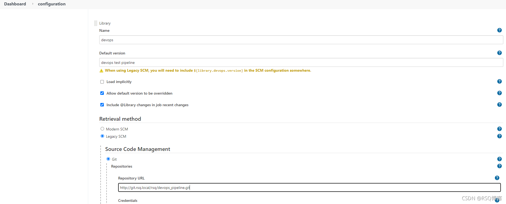
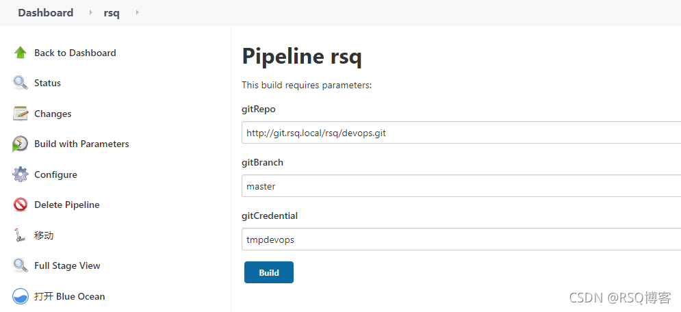
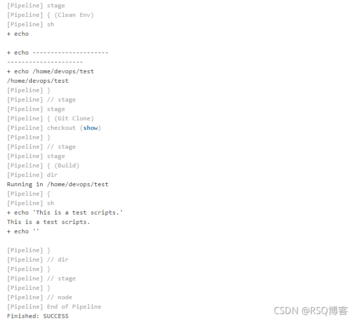

1 准备工作
1.1 需要两个仓库
一个仓库放pipeline，另一个仓库放代码库
| git仓库 | 描述 |
|---|---|
| devops_pipeline | Sharable library pipeline |
| devops | 代码 |
devops_pipeline 目录结构：
$ ls -l
total 5
-rw-r--r-- 1 rsq rsq 21 Oct 24 13:48 README.md
-rwxr-xr-x 1 rsq rsq 595 Oct 24 14:20 test.groovy*
drwxr-xr-x 1 rsq rsq 0 Oct 24 13:56 vars/
$ ls -l vars
total 2
-rwxr-xr-x 1 rsq rsq 178 Oct 24 14:17 build.groovy*
-rwxr-xr-x 1 rsq rsq 819 Oct 24 14:07 gitCheckout.groovy*$ ls -l
total 2
-rw-r--r-- 1 rsq rsq Oct 24 13:41 README.md
-rw-r--r-- 1 rsq rsq 29 Oct 24 13:52 build.sh
$ cat build.sh
echo "This is a test scripts"1.2 Jenkins 配置Share Library
Manager Jnekins --> Configure System --> Global Pipeline Libraries ---> Add Libary(选择devops_pipeline)

1.3 相关groovy
gitCheckout.groovy
#!/usr/bin/env groovy
def call(String gitRepo, String gitBranch, String gitCredential) {
checkout(
[
$class: 'GitSCM',
branches: [[name: gitBranch]],
doGenerateSubmoduleConfigurations: false,
extensions: [
[$class: 'CheckoutOption', timeout: 60],
[$class: 'GitLFSPull'],
[$class: 'CloneOption', noTags: false, reference: '', shallow: false, timeout: 60],
[$class: 'SubmoduleOption', timeout: 60, disableSubmodules: false, parentCredentials: true, recursiveSubmodules: true, reference: '', trackingSubmodules: false]
],
submoduleCfg: [],
userRemoteConfigs: [[credentialsId: gitCredential,
url: gitRepo]]
]
)
}build.groovy
#!/usr/bin/env groovy
def call() {
dir("${WORKSPACE}") {
sh '''
echo "This is a test scripts."
echo "${WROKSPACE}"
'''
}
}test.groovy 主要实现跟share library联动 test.groovy
#!/usr/bin/env groovy
// share library entrypoint.
@Library("devops") _
node("devops_linux") {
// define const
def gitRepo = "${env.gitRepo}"
def gitBranch = "${env.gitBranch}"
def gitCredential = "${env.gitCredential}"
// custom workspace
env.WORKSPACE = "/home/devops/test"
stage("Clean Env") {
sh '''
echo "---------------------"
echo ${WORKSPACE}
'''
}
stage("Git Clone") {
gitCheckout(gitRepo, gitBranch, gitCredential)
}
stage("Build") {
build()
}
}2 Jenkins 新建流水线 item 测试

Configure item，pipeline SCM选择devops_pipeline这个仓库，Script Path选择 test.groovy
